📖 11/19 漫畫版「て形・〜方・どうやって」
全 12 頁日漫複習（baoyu-comic --art manga --tone warm）。剛搬到東京的ハルト（虛構的語言學校學生）跟ミキ先生一起過一天：用テ形、テ形、〜ます說一天的事、看動詞の木、在圖書館和車站用 どうやって、〜の〜方 問做法。氣泡文字可能糊掉或有錯字，請一律以圖下日語列為準（▶ 播放／⧉ 複製）。
角色設定（一致性）
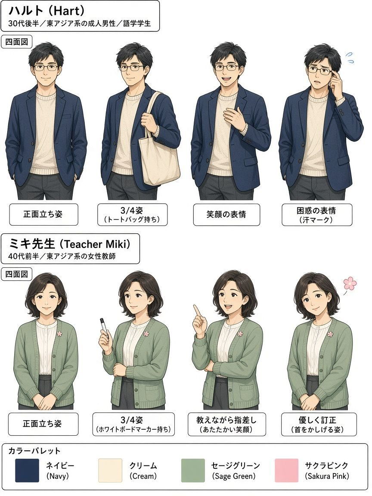
ハルト：剛搬到東京的成人語言學校學生（晚 30 歲、眼鏡、海軍藍外套），虛構角色。
ミキ先生：溫柔的語言學校老師（鼠尾草綠開襟衫、櫻花徽章）。P06 的圖書館員也是虛構角色。
畫風：日漫 clean ink、柔和上色、日語氣泡＋中文對照。
圖上小錯誤備註（請以圖下日語列為準）： P05 第 3 格牆上的時鐘畫成大約 12 點半，台詞是「五時半（5:30）」；第 4 格筆記本上的「分」字畫得不完整； P06 第 2 格背後牆上的小牌子是亂碼（背景裝飾）；第 3 格「カードを見せてください」是圖書館員說的，但這格只畫了ハルト； P08 重畫過一次：第 2 格寫成「オンラインで」（＝インターネットで，意思一樣，課上用的是 インターネットで）；第 4 格原本畫錯，已改成「できました！」；第 3 格背景海報的小字是亂碼； P09 重畫過一次：第 2 格原本畫成「電車で見ます」，已改成正確的「電車で行きます」；第 2 格柱子上的站名牌是亂碼（背景裝飾）； P10 泡澡時還戴著眼鏡、第 4 格想法泡泡是空的（畫面小瑕疵，不影響句子）。
12 頁目錄
P01 朝のて形
朝のて形
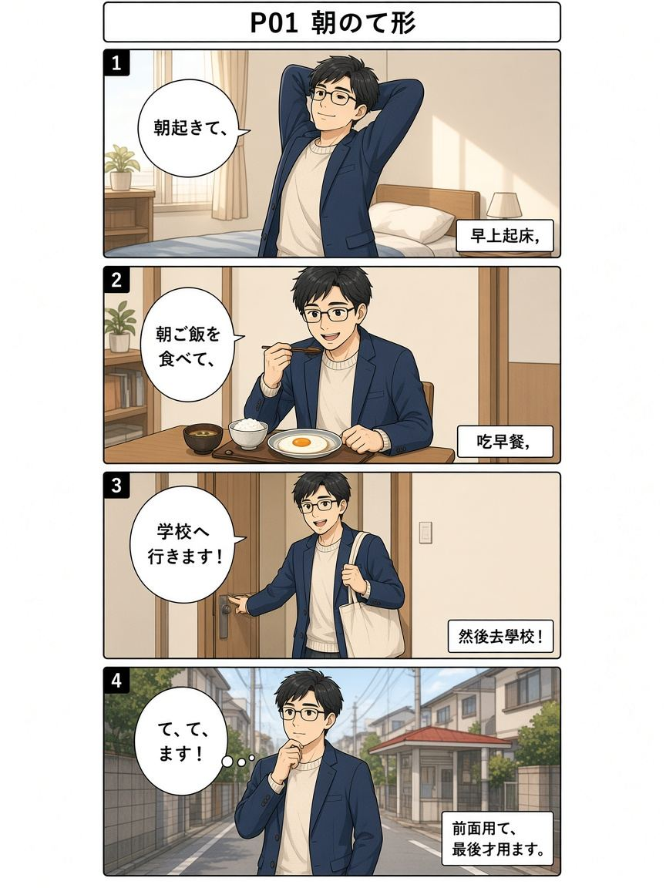
一天的開始：前面的動作用て形，最後才用ます。
P02 週末何をしましたか
週末何をしましたか
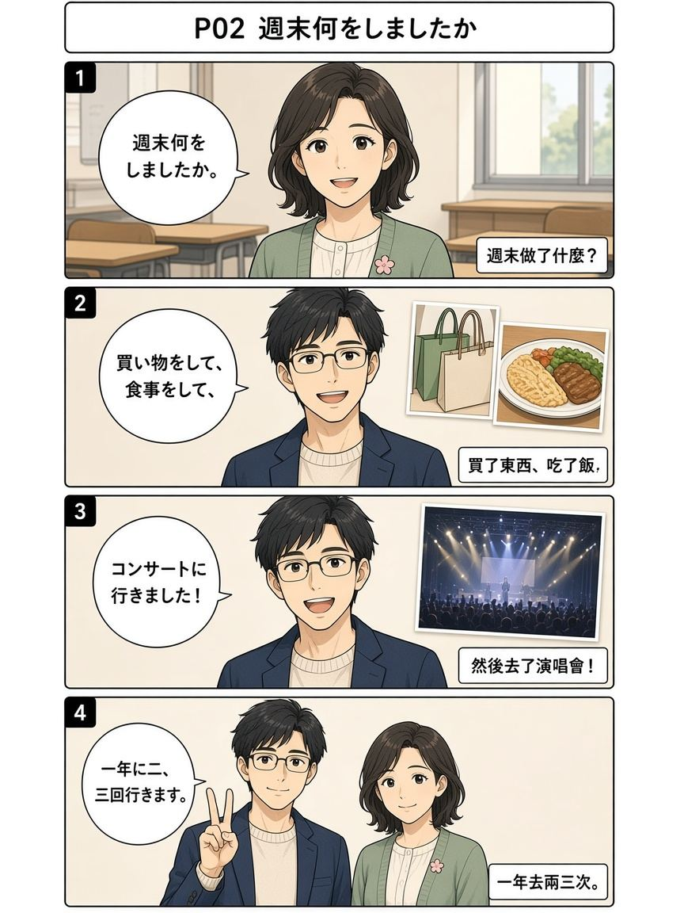
課本會話：用て形說週末做了什麼；頻率用「一年に二、三回」。
P03 て形のグループ
て形のグループ
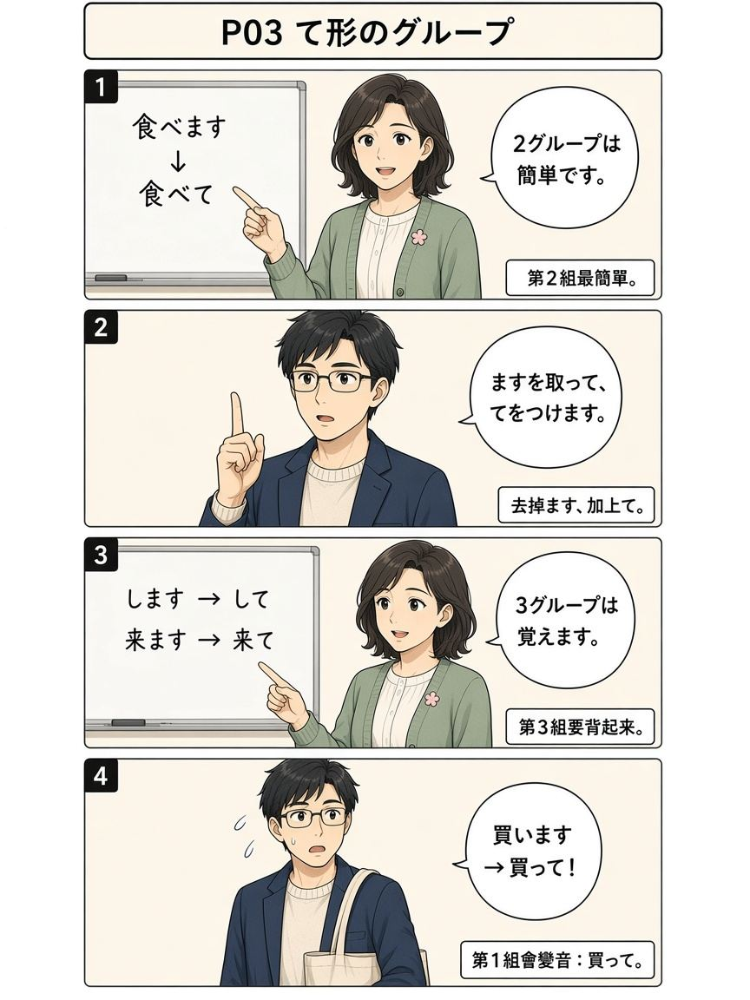
2 組去ます加て；3 組 します→して、来ます→来て；1 組會變音。
P04 動詞の木
動詞の木
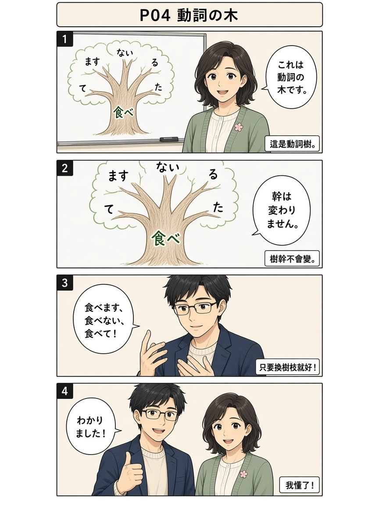
2 組動詞的「樹幹」食べ 不變，只換樹枝（ます・ない・る・て・た）。
P05 漢字 半・分
漢字 半・分
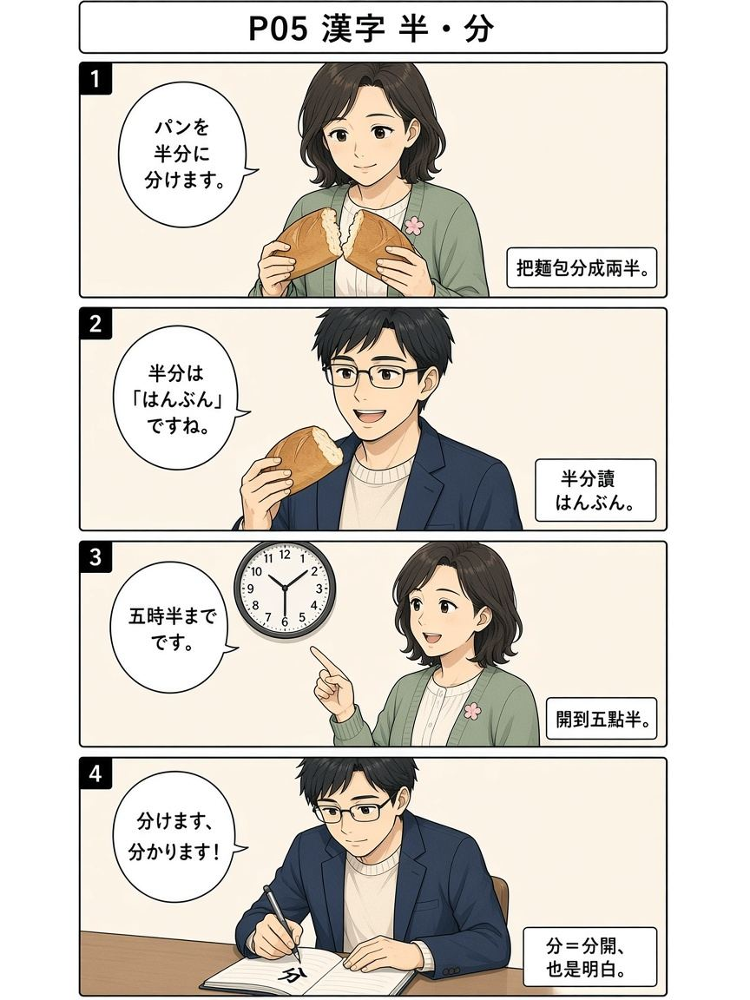
半分（はんぶん）＝一半；分ける＝分開；分かる＝明白；五時半＝五點半。
P06 図書館の受付
図書館の受付
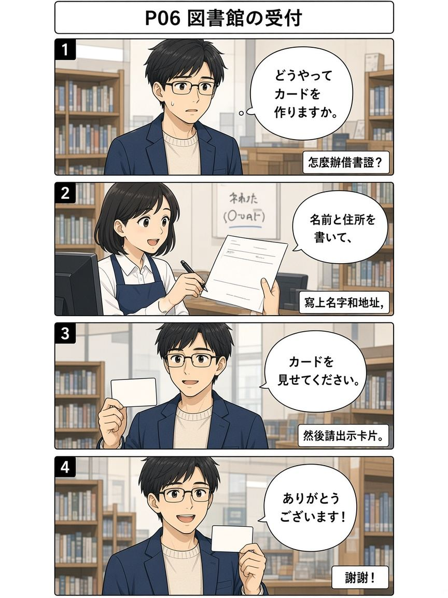
用 どうやって 問方法；回答用て形按順序說步驟。
P07 〜方のルール
〜方のルール
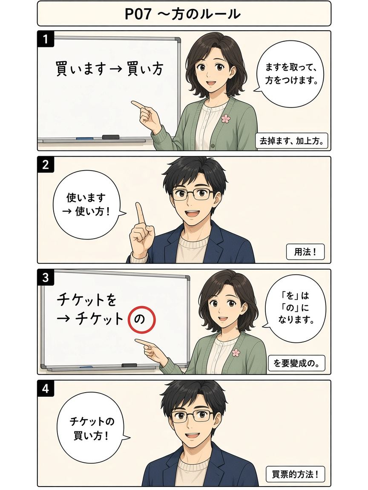
ます形去ます＋方＝做法；前面的「を」要變「の」。
P08 チケットの買い方
チケットの買い方
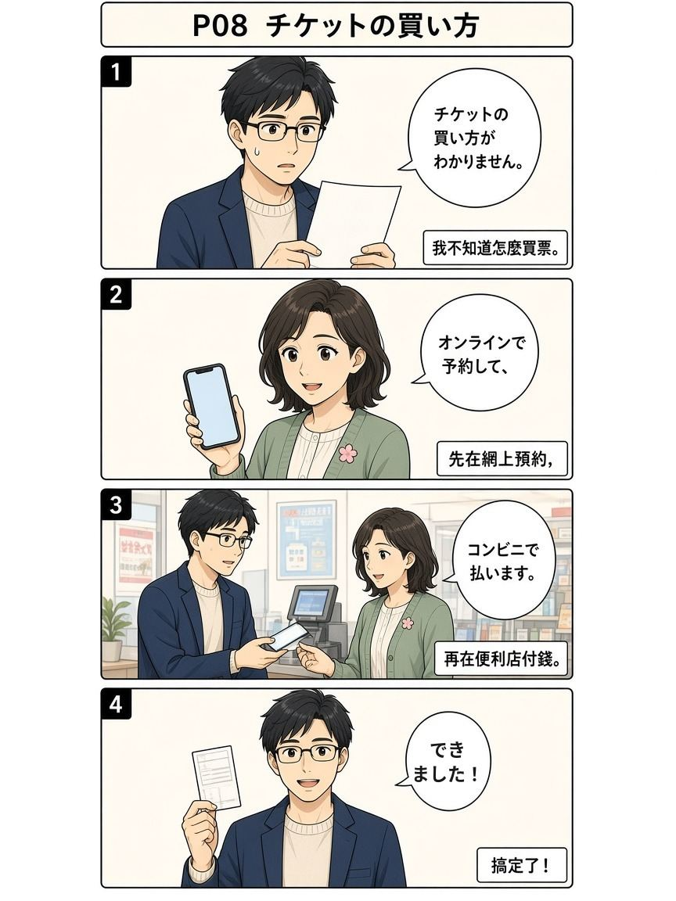
〜方がわかりません → 對方用「〜で〜て、〜ます」說明步驟。
P09 どうやって行きますか
どうやって行きますか
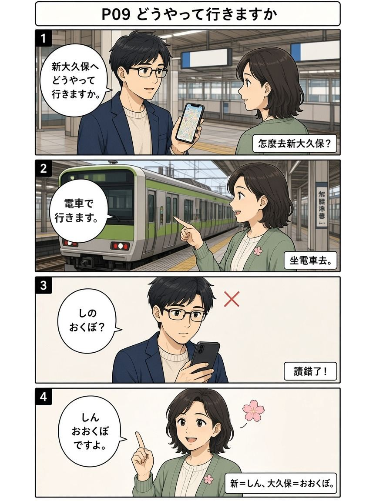
問交通方式：どうやって行きますか → 交通工具＋で；地名 新大久保 要念對。
P10 夜のて形
夜のて形
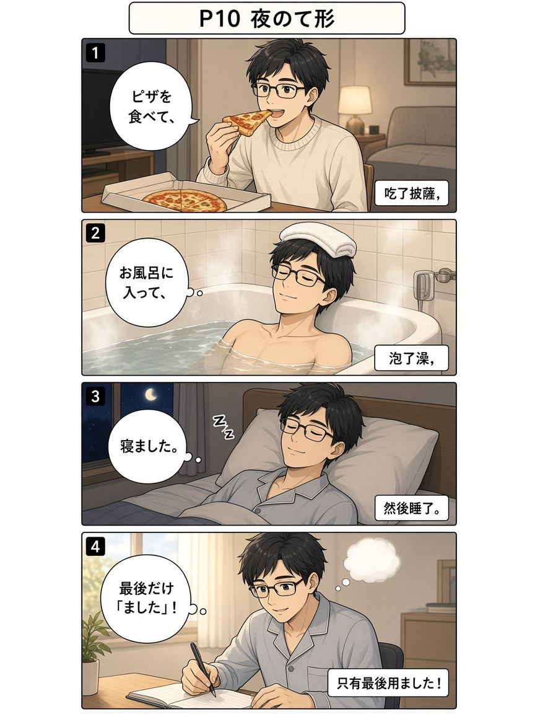
晚上的三個動作：只有最後一個用「ました」。お風呂に入ります＝洗澡（泡澡）。
P11 言います・話します
言います・話します
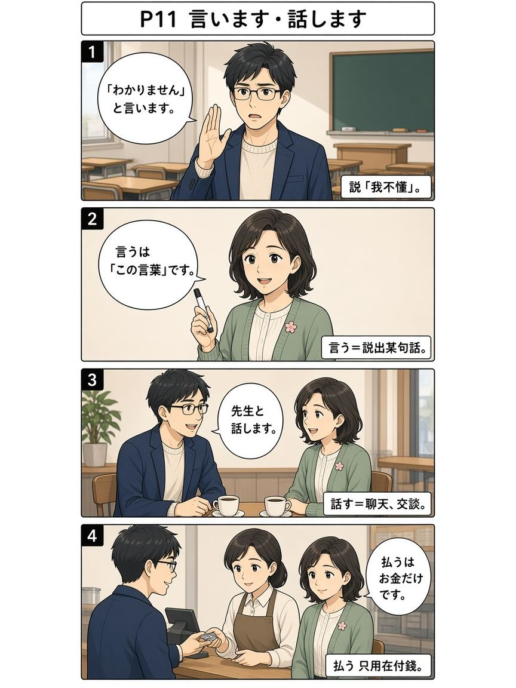
言う＝說出某句話；話す＝聊天交談；払う＝只用在付錢。
P12 まとめ
まとめ
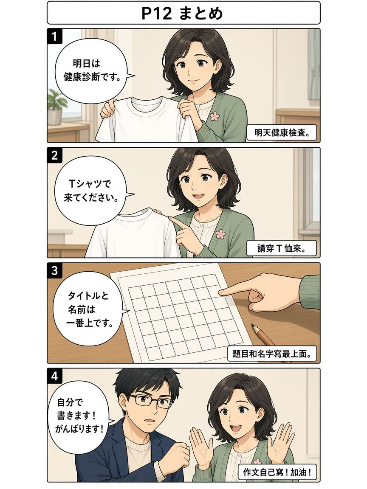
明天健康檢查穿 T 恤；作文「私の趣味」下週交、200 字，題目和名字寫最上面——內容自己寫！
故事和角色都是虛構的，台詞依 11/19 課堂的句型改寫，內容僅供個人複習。作文「私の趣味」請自己寫（老師禁止 AI 代寫），這裡沒有範文。